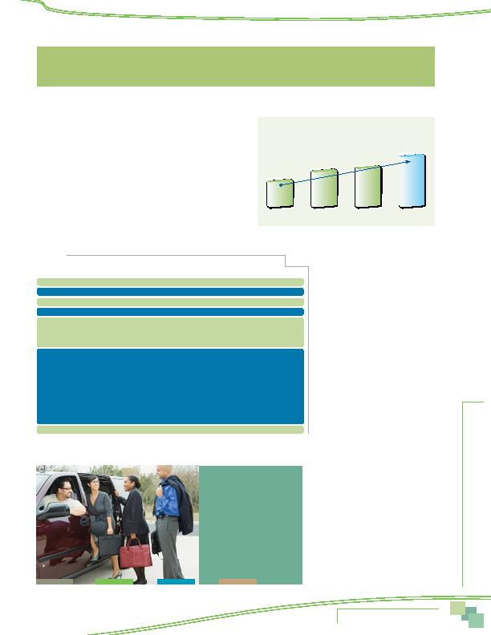

MWCOG-Comm
uter Conn
ecti
on
s-- 2010 State o
f th
e Comm
ute Report
3 7
Figure 31
Awareness of Regional Commute Information Resources
2001
2004
2007
2010
33%
46%
51%
66%
Table 12
Recall of Regional Commuter Assistance Telephone Number or Web Site
Number or Web site
2010 SOC* 2007 SOC* 2004 SOC*
Not aware of phone number/web site
15%
31%
38%
Don't know if a phone number exists
19%
18%
16%
Aware of phone number/web site, but cannot name it
40%
30%
31%
Aware of phone number/web site and can name it
26%
21%
15%
Telephone numbers recalled:
1-800-745-RIDE (7433) Commuter Connections
0.7%
0.8%
1.5%
202-637-7000 Metro, WMATA
2.4% 3.5% 1.4%
Web sites recalled:
www.mwcog.org
0.4% 0.2% 0.2%
www.commuterconnections.org
0.8% 0.3% 0.3%
www.commuterconnections.com
1.1% 1.0% 1.0%
wwww.wmata.com
6.9% 6.8% 6.8%
www.MetroOpensDoors.com
2.9% 0.5% N/A
WMATA web site (unspecified)
3.9% N/A N/A
www.vre.org
0.5% 0.3% 0.3%
Other**
12.4%
4.7%
3.0%
* Might add to more than 100% because multiple responses were permitted.
** Each response in the "Other" category mentioned by less than one percent of respondents.
The current level of
66% awareness is 15
percentage points higher
than in 2007 and twice
as high as in 2001.
AWARENESS OF COMMUTER ASSISTANCE NUMBERS/WEBSITES
The next set of questions in the survey investigated commuters'
knowledge and use of regional commute assistance services. First, respon-
dents were asked if they were aware of a telephone number or web site
they could use to obtain information on ridesharing, public transporta-
tion, HOV lanes, and telecommuting in the Washington region. Two-thirds
(66%) of respondents said they knew such a number existed.
The remaining respondents either said there was not such a phone
number or website (15%) or that they did not know if a phone number or
web site existed (19%).
As illustrated in Figure 31, awareness of regional commute informa-
tion resources has grown steadily over the past nine years. The current
level of 66% awareness is 15 percentage points higher than in 2007 and
twice as high as in 2001.
Recall of Web Sites
and Phone Numbers
When respondents who had said
there was a regional phone number
or web site were questioned on their
recall of the actual number or web
site, about four in ten, or 25% of
all regional workers, could name a
specific number or web site. Table
12 summarizes the awareness of all
numbers/web sites, as percentages
of the regional population. About
12% named a specific WMATA phone
number or web site and three percent
mentioned WMATA or Metro, but
did not specify the number or site.
Commuter Connections was second
only to WMATA as a regional informa-
tion source, named by almost three
percent of all respondents.
Respondents named more than
20 additional organizations that they
knew or believed offered commuter
assistance and information. Each of
these was named by less than one
percent of respondents, but col-
lectively they accounted for 12% of
additional responses. This was much
higher than the number of resources
mentioned in 2007, suggesting
that commuters are more aware of
resources and/or that more resources
are available now than in 2007.
Awareness of regional
commute information
resources has grown
steadily over the past
nine years.
Awareness and Use of Commuter
Assistance Resources
AWARENESS AND USE OF COMMUTER ASSISTANCE RESOURCES